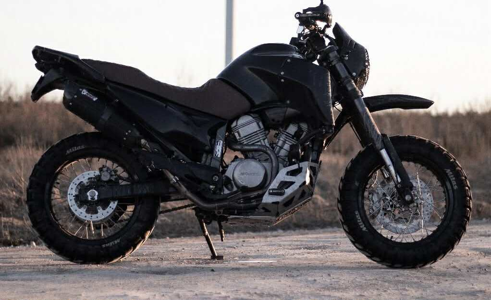
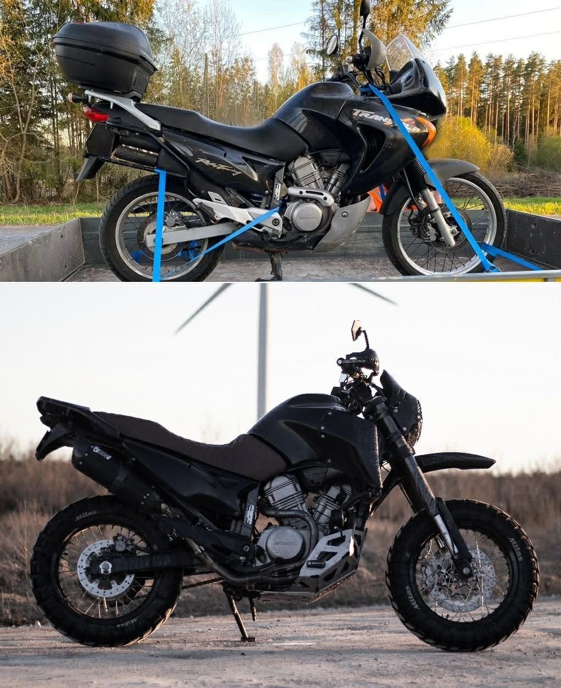

Gallery — Porikärbes
 RMK campsite stop
April 2026 — day trip near Tartu
RMK campsite stop
April 2026 — day trip near Tartu
 Loaded up
April 2026 — packed at a trailhead
Loaded up
April 2026 — packed at a trailhead

Current build
Excel 17" rims, KTM forks, Arrow exhaust

Before & after
2021 — stock touring to street scrambler
Adventure reel
Riding footage by previous owner Reimo Ranniku